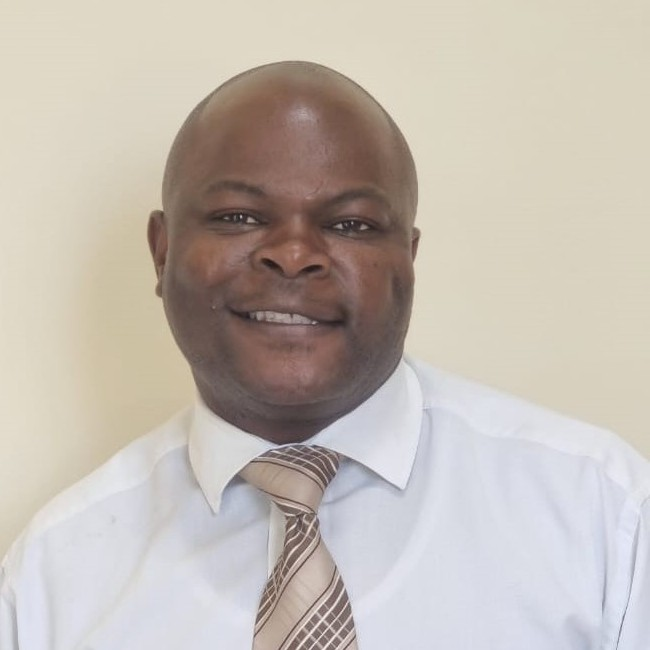

About Me
My name is Noah and I go by Nobility. I was born in Zimbabwe and I currently live my in Cape Town, SouthAfrica. My last job was with a medical billing software and servixes company as a sales business consultant. Everyday I am motivated to work by my two beautiful kids, natalie and Jared. I love watching football and listening to wide variety of music genres. I am taking this course because I love creating things. I speak multiple African languages and I took a huge leap to learn a programming languages.

Malawi, Africa

Malawi is known as the "Warm Heart of Africa" for its friendly people. It is famous for Lake Malawi, one of the world's largest freshwater lakes, which is home to diverse fish species. The country's economy is primarily based on agriculture, with tobacco, tea, and sugar as key exports. Even though I am far away from home, Malawi remains my land of heritance and it stays close to my heart.